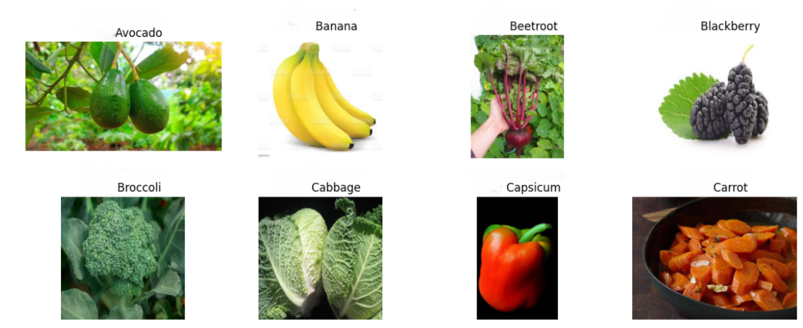
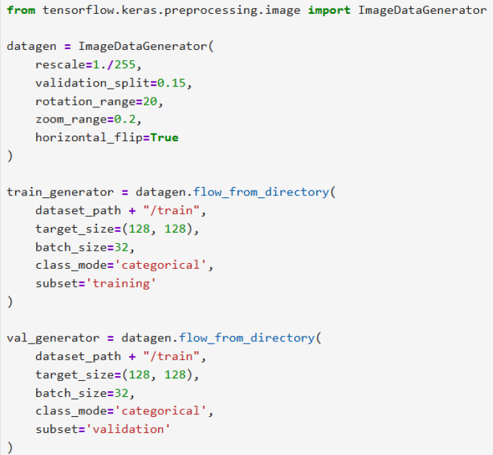
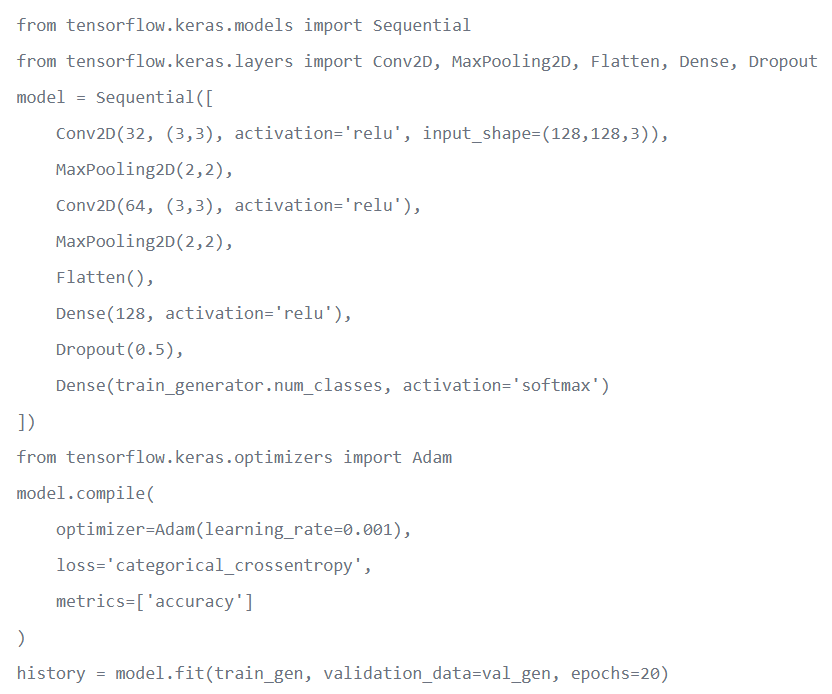
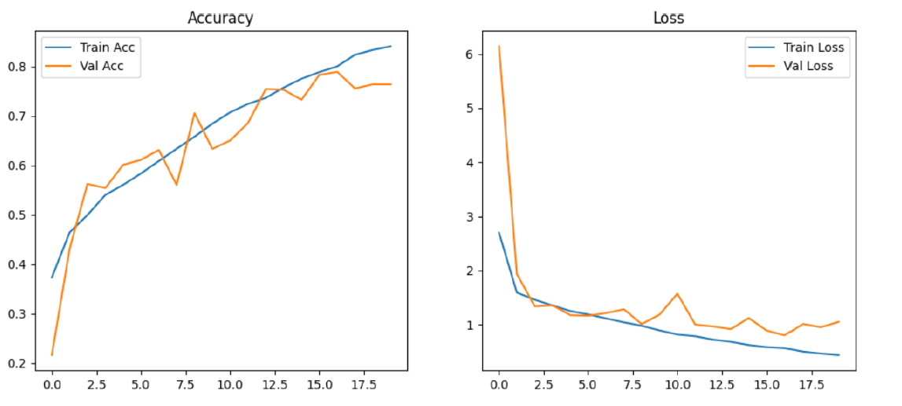
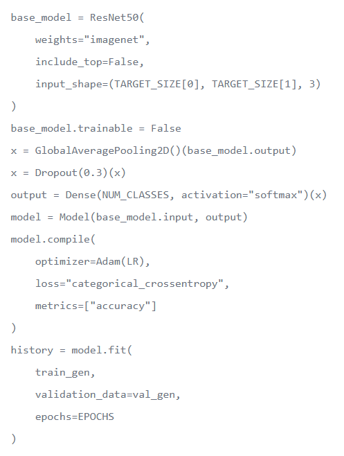
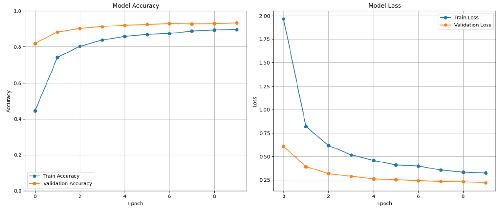
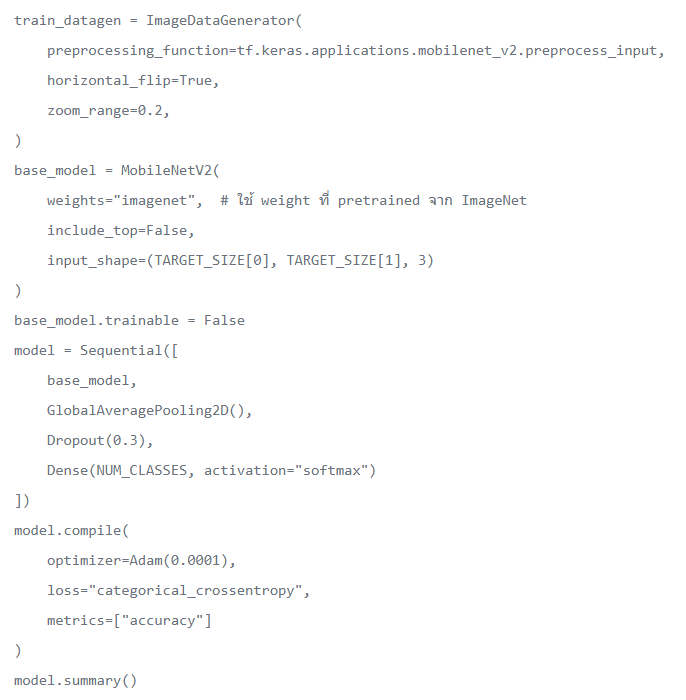
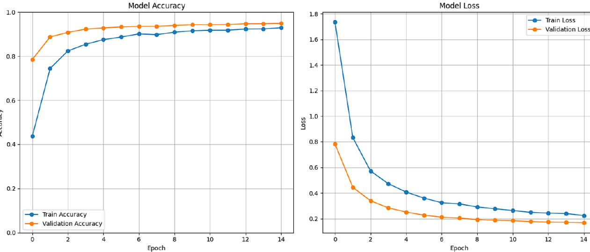
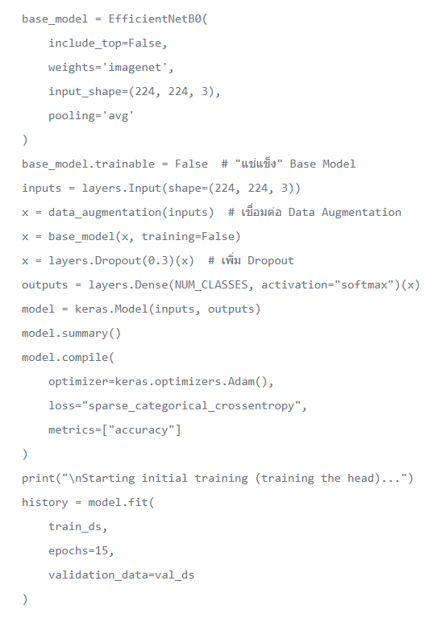
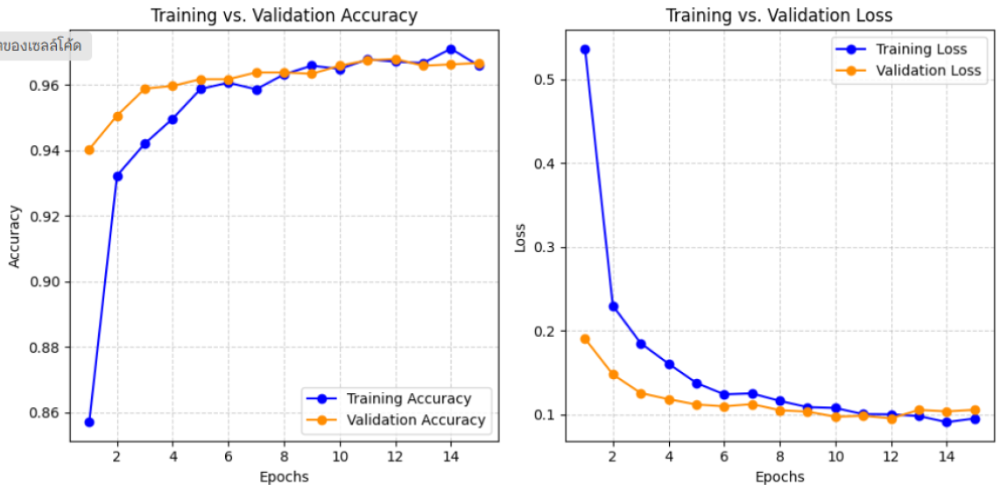

The primary objective of this project is Image Classification. Specifically, it aims to classify images of various fruits and vegetables (such as apples, bananas, carrots, and tomatoes) into their respective categories based on predefined labels.
สร้างโมเดลเพื่อจำแนกภาพถ่ายของผลไม้และผักชนิดต่างๆ ออกเป็นคลาสตามป้ายกำกับ (Label) ที่กำหนดไว้ เช่น แอปเปิล, กล้วย, แคร์รอต และมะเขือเทศ เป็นต้น
- Transfer Learning: ใช้ความรู้และค่าน้ำหนัก (Weights) ที่ผ่านการฝึกฝนจากชุดข้อมูล ImageNet มาเป็นพื้นฐานสำหรับ ResNet50, MobileNetV2 และ EfficientNetB0 เพื่อช่วยในการดึงลักษณะเด่น (Feature Extraction) ของภาพ
- Fine-tuning & Freezing: มีการ "แช่แข็ง" (Freeze) ชั้นฐานของโมเดลเพื่อใช้ดึงข้อมูลภาพเพียงอย่างเดียว และเทรนเฉพาะส่วนหัว (Head) ที่สร้างใหม่ รวมถึงการปลดล็อกบางชั้นเพื่อปรับแต่งให้เข้ากับชุดข้อมูลนี้โดยเฉพาะ
- Data Augmentation:
เพิ่มความหลากหลายของข้อมูลและลดปัญหาการจำข้อมูลที่เฉพาะเจาะจงเกินไป (Overfitting) ด้วยการหมุนภาพ
(Rotation), ซูม (Zoom) และพลิกภาพ (Horizontal Flip) แบบสุ่ม
- Regularization:
ใช้ชั้น Dropout เพื่อปิดการทำงานของเซลล์ประสาทบางส่วนชั่วคราวระหว่างการฝึก และใช้ MaxPooling
เพื่อลดขนาดข้อมูลพารามิเตอร์
- Optimizer & Loss Function:
ใช้ Adam เป็นตัวช่วยปรับค่าน้ำหนักเนื่องจากมีความเสถียรและรวดเร็ว, โดยมี Categorical
Crossentropy หรือ Sparse Categorical Crossentropy เป็นฟังก์ชันวัดความคลาดเคลื่อน
- Fruit and Vegetables :
https://www.kaggle.com/datasets/youssefsalahzakria/fruit-and-vegetables-classification
- ประเภทข้อมูล : ภาพถ่ายสี (RGB) ของผลไม้และผัก, ขนาดภาพส่วนใหญ่เป็น 300x300 พิกเซล, 3
channel
(Red, Green, Blue)
- Label คือ ชื่อชนิดของผลไม้หรือผัก เช่น apple, banana, carrot, tomato และอื่นๆ
- จำนวนภาพทั้งหมด: 72084 ไฟล์ : trainset 50458 ภาพ (70%) , validationset 14416 ภาพ (20%) ,
testset 7210 ภาพ (10%)
ตัวอย่างรูปแต่ละคลาส

- ImageDataGenerator เพิ่มความหลากหลายของภาพด้วยการหมุน ซูม พลิก และnormalize
พิกเซลแบบอัตโนมัติ ช่วยลด overfitting และทำให้โมเดลเรียนรู้ได้ดีขึ้นจากข้อมูลเดิม และประหยัด
RAM และ VRAM
- validation_split=0.15 - แบ่งข้อมูลออกเป็น training และ validation โดยใช้ 15% สำหรับ
validation
- rotation_range=20 - หมุนภาพแบบสุ่มในช่วง ±20 องศา
- zoom_range=0.2 - ซูมภาพแบบสุ่มในช่วง ±20%
- horizontal_flip=True - พลิกภาพในแนวนอนแบบสุ่ม


Activation Functions
- ReLU : ใช้ใน Conv และ Dense เพื่อเพิ่ม non-linearity
- Softmax : ใช้ใน output layer สำหรับ multi-class classification
Loss Function :
categorical_crossentropy - วัดความแม่นยำของการทำนาย
Optimizer :
Adam(learning_rate=0.001) - ปรับ learning rate อัตโนมัติ, เสถียรและเร็ว
= ลำดับการทำงานคือ Conv → Pool → Flatten → Dense → Output
เทคนิคที่ใช้แก้ปัญหา Overfitting
- Dropout(0.5) : ปิดบาง neurons แบบสุ่มระหว่างเทรน ช่วยลดการพึ่งพา feature
เฉพาะเจาะจงเกินไป
- ใช้ MaxPooling2D : ลดขนาด feature map เพื่อลดจำนวนพารามิเตอร์ เพื่อลดโอกาส overfit
- ใช้ ReLU + Softmax : ReLU ช่วยให้เรียนรู้เร็วและไม่ซับซ้อนเกินไป ส่วน Softmax เหมาะกับ
multi-class classification
มี Layer ทั้งหมด 8 ชั้น : Convolutional 2, MaxPooling 2, Hidden Dense 1, Output
1,Dropout 1
Plot Train/Validation Accuracy & Loss


- โมเดลนี้เป็น Convolutional Neural Network แบบ Residual Network
(ResNet)ซึ่งออกแบบมาเพื่อจำแนกรูปภาพผลไม้ขนาด 128x128 พิกเซล (RGB)โดยใช้ Transfer Learning
จากโมเดล ResNet50 ที่ผ่านการเทรนจาก ImageNet
- มี Convolution Layer 49 ชั้น
Activation Functions :
- ReLU : ใช้ในทุก Residual Block เพื่อเพิ่ม non-linearity
- Softmax : ใช้ใน Output Layer สำหรับ multi-class classification
Loss Function :
categorical_crossentropy — ใช้วัดความแม่นยำของการจำแนกภาพหลายคลาส
Optimizer :
Adam (learning_rate = 1e-4) ปรับ learning rate อัตโนมัติ ช่วยให้เทรนเร็วและเสถียร
= ลำดับการทำงานคือ Input → ResNet50 (Feature Extractor) → GlobalAveragePooling → Dropout →
Dense → Output
เทคนิคที่ใช้แก้ปัญหา Overfitting
- Dropout(0.3) : ปิดการทำงานบาง neuron เพื่อป้องกัน overfitting
- Data Augmentation : หมุน / พลิก / เลื่อนภาพเพื่อเพิ่มความหลากหลาย
- Freeze Base Layers (ResNet50) : ไม่เทรนชั้นล่างสุดของ ResNet
เพื่อลดการปรับนํ้าหนักเกินจำเป็น
- Fine-tuning : ปลดล็อกบาง residual block เพื่อเรียนรู้เฉพาะ dataset ของเรา
Plot Train/Validation Accuracy & Loss


- โมเดลเรียนรู้ได้ดีและมีความเสถียรใน 15 Epoch
Plot Train/Validation Accuracy & Loss


มีการเพิ่มชั้นใหม่บนสุดของโมเดล :
- Dropout(0.3) ลด overfitting หลัง validation accuracy เริ่มนิ่ง
- Dense(NUM_CLASSES, activation='softmax') สำหรับจำแนก 10 คลาส
Plot Train/Validation Accuracy & Loss

โมเดลที่ดีที่สุดที่เลือกมาคือ MobileNetV2 และ EfficientNetB0
จากการทดลองและสังเกตตามกราฟ พบว่า MobileNetV2 และ EfficientNetB0
เป็นโมเดลที่ให้ผลลัพธ์ดีที่สุดทั้งในด้าน “ความแม่นยำ” และ “ประสิทธิภาพการประมวลผล”
จึงเลือกนำมาวิเคราะห์และเปรียบเทียบอย่างละเอียด